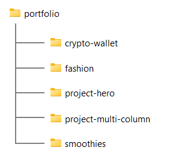
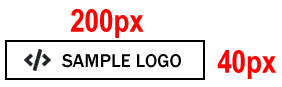

Introduction
Your personal portfolio website is based on the following four web pages:
- Home page (in main folder)
- Privacy page (also in main folder)
- Portfolio page (in 📁 portfolio sub-folder)
- Contact page (in 📁 contact sub-folder)
Your four pages will have the following web addresses.

1: Rename your old index.html web page
In your 'main' 📁 websites folder, you already have a file named index.html. Before continuing, rename this file to exercises.html.

2: Download images
Your next step is to download the following seven images to your 📁 websites/assets/img sub-folder.


{kind=link}
That's it. You now have all the images you need.
3: Download your custom.css stylesheet file
Do you want a light-coloured (or mostly light-coloured) website?
Or a dark-coloured (or mostly dark-coloured) website?

Download one of these two files to the 📁 assets/css sub-folder of your 'main' websites folder.
- custom.css (light theme)
- custom.css (dark theme)
4: Download your Home page
Download one of these two files to your 'main' websites folder.
- index.html (light theme)
- index.html (dark theme)
When saving an HTML page, ensure the Save as type: dropdown list is set to Webpage, HTML only (*.HTML, *.htm).

Open the following two files in VS Code.
- The index.html file in your 'main' websites folder.
- The custom.css file in your 'main' assets/css sub-folder.


5: Download your Portfolio page
You should already have a 📁 portfolio folder in your 'main' websites folder. This should contain sub-folders for each of your portfolio projects as shown below.
Download one of these two files to your 📁 portfolio folder.
- index.html (light theme)
- index.html (dark theme)
6: Download your Contact page
Create a new folder in your 'main' websites folder named contact.
Download one of these two files to your new 📁 contact folder.
- index.html (light theme)
- index.html (dark theme)
7: Download your Privacy web page
Download the file below to your 'main' website folder.
You do not need to update any details on this web page.
8: Verify your hyperlinks
Check your new folder structure and files look as shown below.
Click on the hyperlinks on each page - in the navbar, the main text, and in the footer - to verify that all work correctly.
9: Choose a colour palette
Use the websites below or similar to choose a nice color palette (colour combination) for your Home, Portfolio and Contact pages.
You can use this option from Lunevedy to experiment with colours in the <navbar> and <header>.
And this option from Lunevedy to experiment with colours in the three-column <section>
Update your custom.css stylesheet with your colour choices.
10: Replace the hero image
Replace the sample hero image with a visual of your own choice.
You can use this option from Lunevedy to experiment with image shapes, videos, bleeding edges, and animation.
Use the options at the link below to adjust your image as required:
In the <head> of your Home page, preload your hero image as follows:
<link rel="preload" href="assets/img/hero-image.jpg" as="image">11: Add a Google Font or Fonts
Follow the instructions here to add a Google Font or Fonts.
Here are the more widely-used serif and sans-serif fonts in 2023.

See the websites below for font-pairing inspiration
12: Replace the sample logo with your own
You will want to replace the sample logo with your own. A few points to note.
Your logo should be about 200px wide and 40px tall so that it is readable on a mobile phone screen.
Follow the example of global brands below that have simplified their logos for modern digital screens.

When you have finished creating your logo, save it in your 'main' 📁 websites/assets/img folder and link to it from your web pages.
13: Add a favicon to your web pages
A favicon is a small icon (really a set of icons for different screens) that is displayed within the browser tabs and bookmarks bar of a web browser.

If you have not already done so, create a favicon using one of the following websites:
Place your favicon files in your websites/assets/img sub-folder.
When finished, add the favicon code to your Home, Portfolio and Contact web pages, to just below the description meta tag in the <head>.
See the example below for your Home page.
<link rel="apple-touch-icon" sizes="180x180" href="assets/img/apple-touch-icon.png"> <link rel="icon" type="image/png" sizes="32x32" href="assets/img/favicon-32x32.png"> <link rel="icon" type="image/png" sizes="16x16" href="assets/img/favicon-16x16.png"> <link rel="manifest" href="assets/img/site.webmanifest">
For your Portfolio and Contact pages, your links will begin with "../assets" and not "assets".
14: Personalise your meta tags
Each of your three sample web pages contains template text for the page's title and description tags. These two tags are examples of so-called meta-tags.
Your first task in personalising the sample web pages is to update the content of the meta tags with text of your own choice. Follow the steps below.
- In VS Code, open your web pages.
index.html
📁 contact/index.html
📁 portfolio/index.html - In the <head> of each web page, in the title and description tags, replace the sample text with your own details.
Here are a few examples.
Home page:

Portfolio page:

Contact page:

See the helpful links below for guidance on using the title and description meta tags on your web pages.
Meta tags: Further resources
What is a title tag?. From moz.com.
What is a meta description? From moz.com
Meta Tags for SEO: Definition, Examples, & Best Practices. From Neil Patel
Content Optimization Strategies: Meta Descriptions. From Brian Dean

DO NOT use the same meta tags on different web pages of the same website.
This 'confuses' Google and other search engines.
"When two, or more, of your pages contain similar title tags, it falls upon the search engine to try to determine which page the user really wants to see in their results. What happens is that some of your pages will get preferred ranking status, while others get ignored completely. " Source.
16: Add the Google Analytics code
In the <head> of your Home, Portfolio and Contact web pages, ensure you have added a link to your Google Analytics account. It should look as shown below.
Sign into your Google Analytics and, if necessary, click the option to "Migrate to GA4".
17: Create and add your cookie privacy message
Create a ‘pop-up’ cookie consent message and add it to your Home, Portfolio and Contact pages.
This is required under EU law for any web page that uses Google Analytics.
18: Update the endpoint of your contact form
You need update your contact/index.html web page with the endpoint code you received from the Formspree website.
- In VS Code, display the contact/index.html web page.
- Update the form's action value by copying-and-pasting the endpoint value from Formspree. See the example shown below.

- Save your contact/index.html file.
You can check your form is working by entering some details and clicking the Send button.
You are now ready to upload your files to your account on GitHub.
19: Create and submit a sitemap
Create a sitemap, edit it as appropriate, and upload it to the top-level folder of your website repo on GitHub:
Sign in to your account on Google Search Console and submit your sitemap.
20: Check for broken links
After you have uploaded your web pages to GitHub, run the Dead Link Checker on your https://username.github.io website.

You can ignore the following two apparent errors. This is a fault with the online link checker.

21: Check for any performance issues
Check your Home, Portfolio and Contact web pages for any issues that affect their performance using the website below from Google: